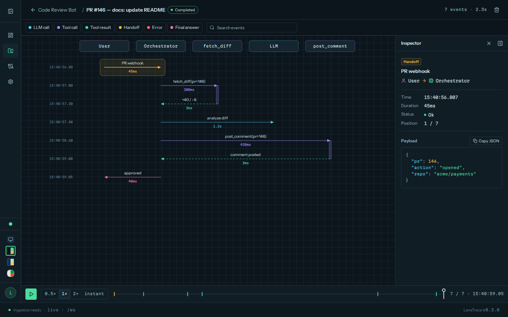

LaneTrace¶
LaneTrace shows an AI agent's run as a live sequence diagram: one lifeline per participant (the user, the orchestrator, each LLM, tool and sub-agent) and one arrow per event, drawn as it happens. Any past run can be replayed at 0.5×, 1× or 2× speed, or shown at once.

It ships as one Python package, lanetrace (also the import and the command):
- a tracking SDK modelled on MLflow's:
set_project(),start_run(),log_event(),@lanetrace.trace; - a LangChain and deepagents integration:
lanetrace.langchain.autolog(), a middleware and two callback handlers; - the dashboard:
lanetrace uiserves the API, a WebSocket live stream and the web interface, from one Python process (no Node or Bun at runtime).
By default the SDK writes to a SQLite file, ./lanetrace.db, and
lanetrace ui reads that same file. Tracing needs no server, no account and
no API key.
How it fits together¶
flowchart LR
agent["Your agent<br/>SDK, autolog, middleware"] -- "writes (default)" --> db[("./lanetrace.db<br/>or PostgreSQL")]
agent -- "POST /api/events<br/>(http tracking URI)" --> ui["lanetrace ui<br/>API and dashboard"]
ui --- db
ui -- "/ws live stream" --> browser["Browser"]The tracking URI decides where runs go: the default
SQLite file, any SQLAlchemy database URL, or a running lanetrace ui over
HTTP. The dashboard reads new events from the database, so runs that the SDK
writes there directly show up live as well.
Pick an integration¶
| Your code | Use |
|---|---|
| LangChain or deepagents, any setup | lanetrace.langchain.autolog(): one line, the agent code doesn't change |
| An agent built for each invocation | LaneTraceMiddleware, passed to create_agent or create_deep_agent |
| An async server that reuses a compiled agent, with sub-agents | AsyncLaneTraceCallbackHandler, one per request |
| Any other Python code | the fluent API |
| Another language | POST /api/events |
Next steps¶
- Installation: the package and its extras.
- Quickstart:
lanetrace ui, then a first trace. - Coming from MLflow: the same names, mapped.
- Event contract: the JSON an agent sends.